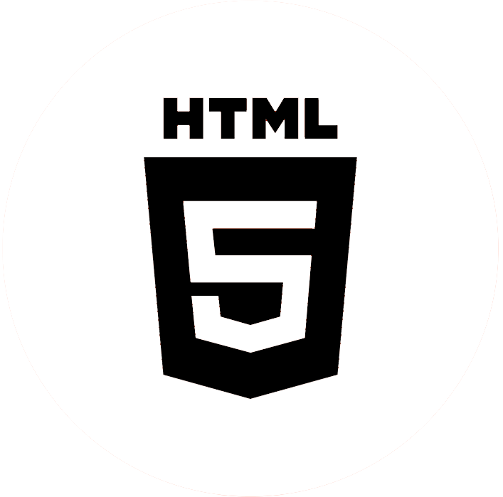

Lynn van der Hoorn, (2004)
Hi, ik ben Lynn. Een 21–jarige UX/UI & Visual designer uit Amsterdam. Ik combineer graag user experience en design om een complete digitale ervaring te creëren. Momenteel zit ik in mijn derde jaar van mijn studie Communication and Multimedia Design aan de Hogeschool van Amsterdam.
Creatief bezig zijn heb ik altijd leuk gevonden. Sinds ik klein ben, houd ik van knutselen en tekenen. Daarom voel ik me helemaal op mijn plek bij CMD. Ik richt me vooral op UX/UI design, omdat ik mijn creativiteit daarin kwijt kan en ik producten kan ontwerpen voor verschillende gebruikers met verschillende behoeftes. Soms vind ik het ook leuk om met front–end development bezig te zijn.
Skills
- 
HTML

CSS

Javascript

Figma

Adobe Illustrator

Adobe Photoshop

Adobe XD
-
Blender